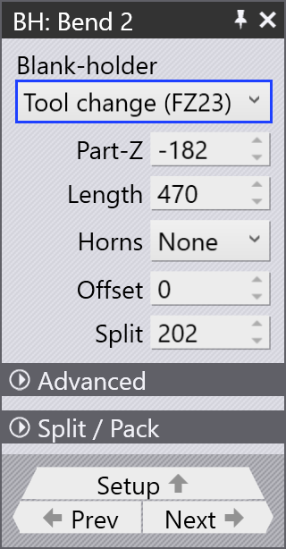

Niederhalter bearbeiten
Während der automatischen Werkzeugzuordnung generiert TecZone Fold eine Niederhalterzusammensetzung, sodass so viele Biegungen wie möglich mit der anfänglichen Zusammensetzung verarbeitet werden können. Die Niederhalterzusammensetzung kann auch manuell angepasst werden, um verschiedene Teilegeometrien und Biegeanforderungen zu berücksichtigen.
Niederhalter (BH)-Fensterbereich
Klicken Sie auf den oberen Niederhalter, um den Fensterbereich BH zu öffnen. Mit diesem Bereich können Sie die Niederhaltereigenschaften (für eine ausgewählte Biegung) bearbeiten, einschließlich Ändern der Niederhalterzusammensetzung, Verwenden des ENW-Werkzeugs, Ändern des ENW-Werkzeugtyps usw.
Klicken Sie auf das Dropdown-Menü Niederhalter, um den Niederhaltertyp zu ändern:


-
ENW-Werkzeug - Diese Option wird verwendet, um den Typ des ENW-Werkzeugs für eine bestimmte Biegung auszuwählen. Die Informationen werden in der Zelle des Biegenavigators angezeigt.
-
Kern-Zusammensetzung - Die anfängliche Niederhalterzusammensetzung, die der Standard-Niederhalter ohne zusätzliche Werkzeuge ist.
-
Werkzeugwechsel (FZ23) - Programmieren Sie eine neue Niederhalterzusammensetzung mit der FZ23 Funktion.
Teil-Z: Verwenden Sie diese Option, um das Teil entlang der Z-Achse zu verschieben. Dies ist nützlich zum Anpassen der Position des Teils in der Maschine entlang der Biegelinie.
Länge: Bearbeiten Sie die Niederhalterlänge. TecZone generiert automatisch eine Niederhalterzusammensetzung, um dem angegebenen Längenwert zu entsprechen.
Z-Versatz: Diese Option wird verwendet, um das ENW-Werkzeug entlang der Z-Achse zu versetzen.
Hörner: Wählen Sie aus, welche Hornteile in die Niederhalterzusammensetzung aufgenommen werden sollen. Sie können linke, rechte oder beide Hörner wählen.
Versatz: Dies ist der Abstand zwischen der Mitte der Maschine und der Mitte des Niederhalters.

Trennen: Die Länge der Lücke zwischen dem rechten Rand der Kern-Zusammensetzung und dem ersten ungenutzten Stück (ausgegraut) rechts vom Niederhalter.
Erweitert
Horn-Rückzug: Wählen Sie Keine, um den Horn-Rückzug zu deaktivieren. Der Horn-Rückzug kann aktiviert werden, indem Sie entweder linke, rechte oder beide Hörner auswählen.
Trennen / Packen und Extra-Trennen / Packen
Diese Optionen können verwendet werden, um Teile in der Niederhalterzusammensetzung zu trennen und zu packen. Trennen wird verwendet, um eine Lücke zwischen Werkzeugen zu erstellen, während Packen verwendet wird, um eine Lücke zwischen Werkzeugen zu schließen.
Die Optionen Trennen/Packen und Extra-Trennen/Packen werden verwendet, um die Lücken zwischen den Werkzeugen anzupassen.
Um eine Trennung zu erstellen, werden Werkzeuge nach außen bewegt; um sie zu packen, werden sie nach innen bewegt.
| Nur eine oder zwei Trennungen für jede Seite des Niederhalters werden unterstützt (zum Beispiel ist es nicht möglich, drei Trennungen auf der linken und eine auf der rechten Seite zu haben). Maximal vier Trennungen insgesamt sind möglich: zwei auf jeder Seite. |
| Die Breite eines Standard-Niederhalters beträgt 160 mm und die Breite eines Niederhalters mit Horn beträgt 199 mm. |
Trennen / Packen
Links oder Rechts: Wählen Sie die Seite (links oder rechts) für den Trenn-/Packvorgang.
-
Die Auswahl von 0 aktiviert ein Trennen / Packen am Ende der Kern-Zusammensetzung.
-
Die Auswahl eines negativen Werts (z. B. -160) fügt eine Lücke innerhalb der Kern-Zusammensetzung hinzu.
-
Die Auswahl eines positiven Werts (z. B. +199) fügt ein neues Stück am Ende der Kern-Zusammensetzung hinzu.
Linke oder rechte Lücke: Bearbeiten Sie den Betrag der Standardlücke für das ausgewählte linke/rechte Stück des Niederhalters.
Extra-Trennen / Packen
Links1 oder Rechts1: Wählen Sie das Standardstück aus, nach dem die zusätzliche Lücke eingefügt wird. Normalerweise stehen acht Standardstücke zur Verfügung, ausgenommen ein Horn niederhalter.
Linke Lücke1 oder Rechte Lücke1:
Bearbeiten Sie den Betrag der zusätzlichen Lücke nach den Standardstücken.
|
Wenn hier eine zusätzliche Lücke aktiviert ist, kann die Standardlücke in Trennen / Packen nicht mehr bearbeitet werden. Diese Option ist für den Niederhaltertyp Werkzeugwechsel (FZ23) nicht verfügbar. |